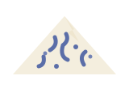

Blue Cheeses

Veined with Penicillium roqueforti, blue cheeses are pierced with needles so air reaches the interior and the blue mold can bloom along the channels.
- Character
- Salty, sharp, and divisive. The paste ranges from creamy to crumbly; the veins carry a peppery, metallic tang that people either chase or flee.
- Notable members
- Roquefort, Gorgonzola, Stilton, and Cabrales.
- How to enjoy
- With something sweet — pears, honey, port. Blue cheese plus dessert wine is the oldest peace treaty in food.